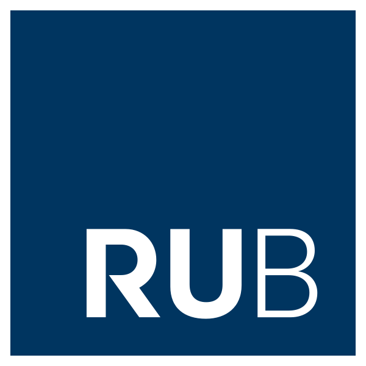

AUSBILDUNG
Hier folgen Details zu meiner Ausbildung, einschließlich meiner Rollen, Verantwortlichkeiten und Errungenschaften.
Ruhr-Universität Bochum
Master of Science (04/2022 – vsl. 08/2024)
- Studiengang, Zwischennote: Maschinenbau, 1.2
- Masterarbeit: Künstliche Intelligenz und Computer Vision zur automatisierten Erkennung von Montageschritten im Kontext von Assistenzsystemen
Universiti Putra Malaysia
Auslandssemester (03/2023 – 07/2022)
Ruhr-Universität Bochum
Bachelor of Science (09/2017 – 03/2022)
- Studiengang, Endnote: Maschinenbau, 2.8
- Bachelorarbeit: Entwicklung eines mobilen kollaborativen Robotersystems für Schäumungsprozesse in der Automobilindustrie
 Istanbul Teknik Üniversitesi
Istanbul Teknik Üniversitesi
Auslandssemester (10/2020 – 03/2021)